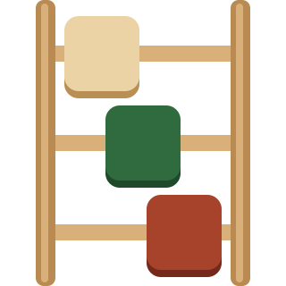

Sözcük Merdiveni
Her basamakta tek harf değiştir, hedef kelimeye in.
Yeni bulmaca --:--:-- sonra
Merdiveni yukarıdan aşağı in: her basamakta tek harf değiştir, hedef kelimeye ulaş.
Yeşil harf, hedefteki yerine oturmuş demektir.
Kelimeyi telefonunun klavyesiyle yaz, klavyedeki gönder tuşuyla onayla. Klavyende Türkçe harf yoksa merdivenin altındaki Ç Ğ I İ Ö Ş Ü şeridini kullan.
Günün BulmacasıHerkese aynı bulmaca. Her gün Türkiye saatiyle 00:00'da yenilenir. Çözünce sonucunu paylaşabilirsin.
Serbest Oyunİstediğin kadar oyna. Zorluğu (kolay, orta, zor) ve kelime uzunluğunu (3, 4, 5 harf) sen seç; seçimin hatırlanır.
İki şeye bakılır: hedefe ulaşmak için gereken en az adım sayısı ve farklı çözüm yollarının sayısı. Az adımlı ve çok yollu bulmacalar kolay; uzun ve tek çözümlü olanlar zor sayılır.
Sözlük, Türk Dil Kurumu yazımına uygun 3, 4 ve 5 harfli kelimelerden oluşur. Bulmacalar önceden bilgisayarla çözülür; yayımlanan her bulmacanın bir çözümü vardır.
Görüşünü, önerini ya da eksik bulduğun kelimeyi yaz: iletisim@sözcükyolu.com
Anladım